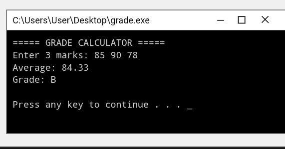
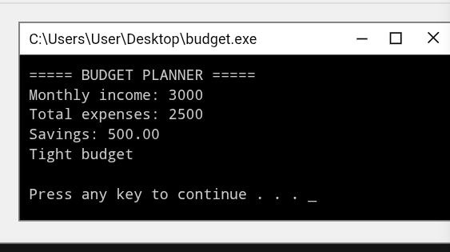
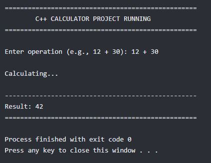

Back To Home
My Projects
Details Of every project I have built.
JavaScript Grade Calculator
A grade calculator that calculates student's grade based on their score out of 100.

How I built it
- Designed the user interface with an input field for the score and a submission button.
- Wrote JavaScript logic to capture the user input when the button is clicked.
- Implemented conditional statements to map numeric scores to letter grades.
- Rendered the calculated grade dynamically onto the web page using DOM manipulation.
Technologies Used
Personal Budget Decision Tool
A website built using HTML, CSS and JavaScript that helps users decide whether they can afford to buy something based on their budget.

How I built it
- Created form inputs to capture user income, existing expenses, and the target item's cost.
- Styled the application with responsive layouts to ensure accessibility across desktop and mobile screens.
- Developed JavaScript calculations to compare remaining disposable income against the item cost.
- Added logical checks to output an immediate "Affordable" or "Not Affordable" decision with tailored feedback.
Technologies Used
Simple Calculator
A calculator that adds, subtracts, multiplies and divides.

How I built it
- Structured the grid layout for the operator buttons, number keys, and the clear display screen.
- Mapped event listeners to each button to append the clicked characters into a mathematical expression string.
- Utilized evaluation logic to compute final totals when the equal sign is triggered.
- Added error handling to prevent crashing during invalid actions like dividing by zero.
Technologies Used
Official W3C HTML Reference
Jump to Contact Info